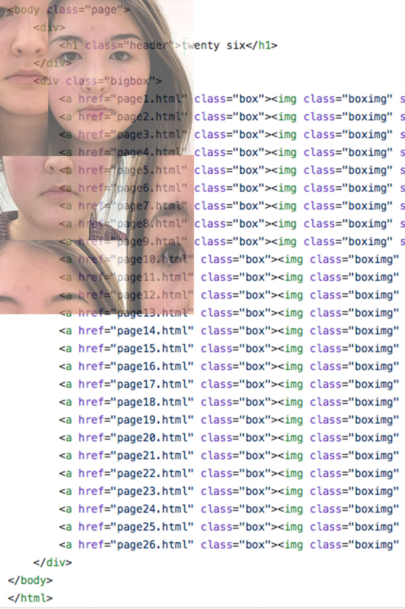

- Digital collage, Photoshop
- A collage of my face covers 26% of the code for this website
- Developed most of the early Macintosh icons, bringing graphic interface to the masses, including the command symbol -
Pioneered the first proportionally spaced digital font family -
Has done work for Facebook, Microsoft, IBM, Motorola, Sony Pictures and more
Currently a creative director at Pinterest -
https://www.aiga.org/medalist-susan-kare